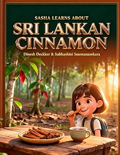

Stories that teach,
research that matters.
I'm Dinesh Deckker — a bestselling KDP author of 300+ books and a published researcher with 50+ peer-reviewed papers and 200+ citations across artificial intelligence, education, and marketing. A PhD researcher and digital strategist with over two decades of experience.

Sri Lankan-born author and researcher based in Muscat, Oman. Co-author of the Bible Adventure Series with Subhashini Sumanasekara.
Amazon Author Page Goodreads Profile ResearchGate Subhashini Sumanasekara info@dineshdeckker.comPublished Books
KDP catalog spanning children's Bible, biblical fiction, devotionals, and educational titles.
Browse all books →Academic Research
Peer-reviewed papers on AI, digital culture, and corpus linguistics. Doctoral candidate in Marketing.
View publications →Writing Partnership
Most of the Bible Adventure Series is co-authored with Subhashini Sumanasekara, an ICT educator and children's author.
Meet Subhashini →Years in Digital
Digital marketing strategist, SEO expert, and creative writing coach with a global portfolio.
About me →Featured Books




Recent Publications
Beyond publishing, Dinesh is an active researcher with 51 peer-reviewed papers and preprints, 200+ citations, an h-index of 8, and 19 Web of Science–verified peer reviews — focused on artificial intelligence, education, marketing, and corpus linguistics.